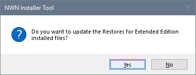

The Installer Tool contains a pre-configured database containing file information for the contents of the mod, mus, nwm, txpk and ovr folders that are included in Beamdog's and Steam's Enhanced Edition Library directory.
If changes are detected, a customised database is created to reflect the updated and added files. If you created Restorers for Enhanced Edition installed files, click Yes to update affected the Restorers.

This message is only displayed if the "1. NWN Core Files Restorer" has been created.
Update Enhanced Edition Files is not shown for standard Neverwinter Nights Profiles.
|
|
Click the menu illustration to view information about other tools. |